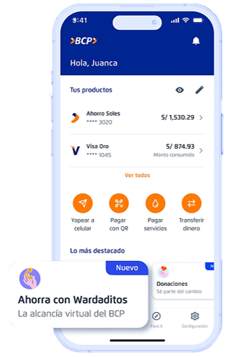

Mentalidad y presupuesto
El presupuesto 50/30/20
Tal vez ya has escuchado sobre esto pero igualmente te lo explico aqui y como lo puedes aplicar a tu vida.
Esta regla es un metodo que te ayuda a distribuir tus ingresos mensuales y propone lo siguiente:
- 50% para necesidades basicas: pago de alquiler, alimentos, transporte, etc.
- 30% para deseos: Son gastos que no son importantes pero te permiten disfrutar la vida. Aqui se incluye salir a comer tu pollo a la brasa, ir al cine, comprar ropa, suscripciones como netflix, etc.
- 20% para pagar deudas, ahorrar o invertir (en otra seccion hablaremos sobre las inversiones): Siempre es bueno ahorrar para tener un fondo de emergencias o comprar ese auto, departamento, celular o laptop que quieres.
En resumen:
Cuidado con los gastos hormiga
Los gastos hormigas son compras que hacemos casi a diario y que no estaban planificadas. Son compras pequeñas pero a la larga suman una cantidad de dinero considerable
Les pongo mi caso, despues de la universidad yo siempre compraba un sporade o alguna galleta en tambo o en algun kioko de la esquina.
Yo gastaba 4 o 5 soles. Parece poco dinero no...?
Bueno, eso lo hacia al menos 4 veces a la semana. Hagamos los calculos:
[5 soles] x [4] = 20 (20 soles por semana)
Un mes tiene 4 semanas: [20 soles] x [4] = 80 (80 soles cada mes)
En 1 año son: [80 soles] x [12] = 960
Son casi 1000 soles en 1 año!
Si eres adulto, probablemente tu haces mas gastos hormigas y estas perdiendo mucho mas dinero sin darte cuenta.
Por ejemplo: compras por internet, usar pedidosYa muy seguido, comprar videojuegos o hacer compras dentro del juego, etc.
Ese es el peligro de los gastos hormigas. Parece poco dinero pero si lo sumas, te daras cuenta que es mas dinero de lo que pensaste.
Que puedes hacer?
1. Anotar los gastos hara que te des cuenta de lo que gastas y pienses mejor a la proxima.
2. Asigna un presupuesto maximo para esos gastos hormigas cada mes. Un ejemplo: Gastar maximo 50 soles durante todo un mes. (si tienes mas dinero, puedes permitirte gasta mas)
De seguro escuchastes de los gastos vampiros
Los gastos vampiros son cobros automaticos, silenciosos por suscripciones que ya no usamos.
Les doy un ejemplo: Hubo un tiempo donde yo estaba suscrito a disney plus, hbo y netflix.
Yo solo me suscribe a disney para ver toda la saga de Marvel. Yo ya lo habia acabado de ver todo pero seguia suscrito sin darme cuenta y estaba perdiendo dinero. Ademas yo casi ya no usaba hbo pero seguia suscrito
Estaba suscrito a 3 servicios de streaming cuando solo usaba netflix!
Fondo de emergencia
Fondo de emergencia o "Colchon financiero" es un monto de dinero que debemos guardar (sin invertir) para usar en caso ocurra alguna emergencia. Nos enfermamos, nos sucede un accidente, etc.
Incluso nos permite afrontar periodos de crisis economicas en el pais o si te quedas sin trabajo entre otros casos.
Cuanto dinero debe ser?
No hay una cifra exacta pero si seguimos la regla del presupuesto 50/30/20, entonces ahi debemos ahorrar entre 10-20% de nuestros ingresos.
Ese dinero debe estar seguro, ser de facil acceso, no debe estar en nuestra cuenta bancaria o yape para evitar tentaciones y ademas seria desordenado
Entonces...Donde guardo ese dinero?
Es Peru tenemos algunas opciones como:
- Cuenta de Ahorros de Banco Pichincha
- Cuenta de Ahorros en Ripley
- Cajas municipales
- Wardaditos BCP
Creo que el mas facil de aprender y manejar es Wardaditos BCP
WARDADITOS BCP
Primero veamos lo bueno y malo
| Ventajas | Desventajas |
|---|---|
| Habito automatico: El banco te separa el dinero por ti |
Baja rentabilidad: La tasa de interes es del 0.123% anual (hasta ahora 2026) |
| Disponibilidad inmediata: Retiras tu dinero en cualquier momento. (el dinero se regresa a tu cuenta bancaria) |
Al ser de alta Disponibilidad, puedes acabar sacando tu dinero (aunque el dinero esta fuera de la vista, eso ayuda de cierta manera) |
| Cero comisiones: No te cobran nada |
En donde se encuentra?
Solo ingresa a la app del BCP y buscalo
